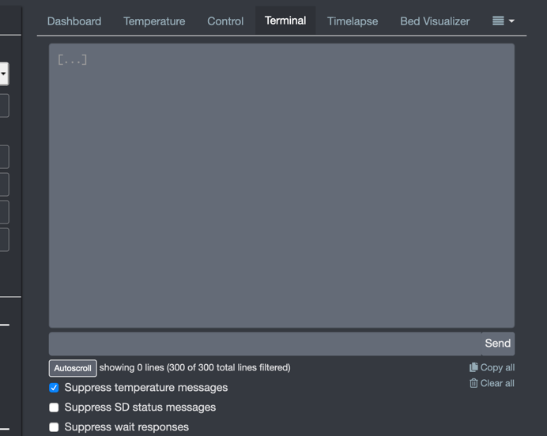
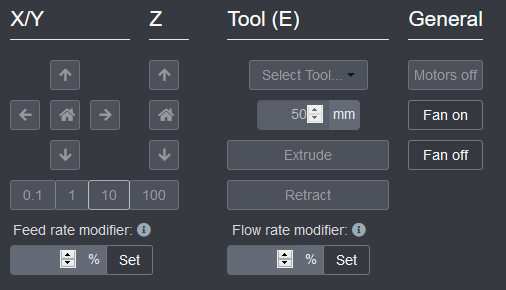
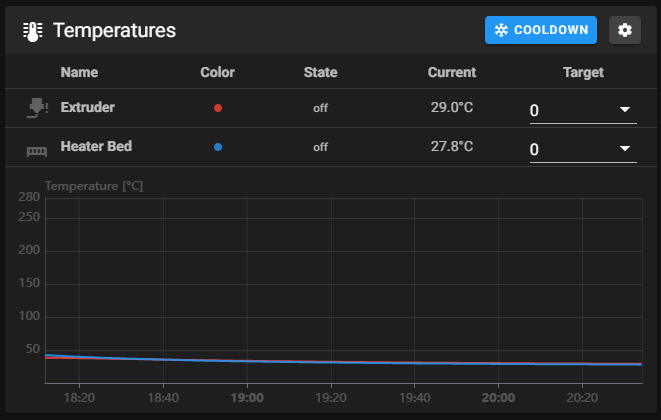
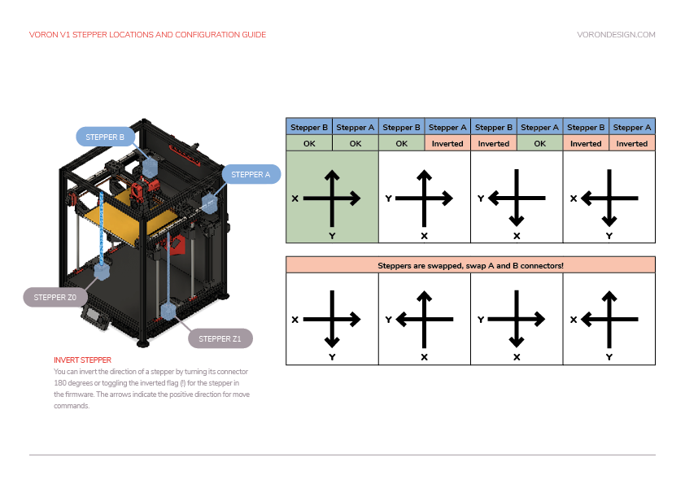
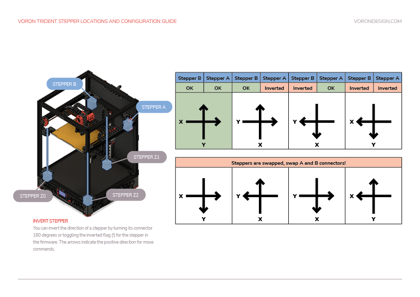

This section provides a list of steps to help confirm the pin settings in the Klipper printer.cfg file.
During this guide, it may be necessary to make changes to the Klipper config file. Be sure to issue a RESTART command after every change to the config file to ensure that the change takes effect (type “restart” in the Octoprint or Mainsail terminal and then click “Send”). It’s also a good idea to issue a STATUS command after every RESTART to verify that the config file is successfully loaded.
Any time commands are requested to be issued, those will happen in the ‘Terminal’ tab of the OctoPrint, Mainsail, or Fluidd web UI, in the box for entering commands directly.

Any time movements need to be made, those will happen in the ‘Control’ tab / section of the Octoprint, Mainsail, or Fluidd web UI. The numbers underneath X, Y, and Z control the movement distance.


Start by verifying that temperatures are being properly reported. Navigate to the Octoprint/Mainsail temperature graph.


Verify that the temperature of the nozzle and bed are present and not increasing. If it is increasing, remove power from the printer. If the temperatures are not accurate, review the “sensor_type” and “sensor_pin” settings for the extruder and/or bed.
Navigate to the OctoprintMainsail temperature graph and type in 50 followed by enter in the “Tool” temperature target feild. The extruder temperature in the graph should start to increase (within about 30 seconds or so). Then go to the “Tool” temperature drop-down box and select “Off”. After several minutes the temperature should start to return to its initial room temperature value. If the temperature does not increase then verify the “heater_pin” setting in the config.
perform the above test again with the bed.
To verify that each stepper motor is operating correctly, send the following command in the terminal:
STEPPER_BUZZ STEPPER=stepper_x
Run this command for each of the motors:
The STEPPER_BUZZ command will cause the given stepper to move one millimeter in a positive direction and then it will return to its starting position. (If the endstop is defined at position_endstop=0 then at the start of each movement the stepper will move away from the endstop.) It will perform this oscillation ten times.
If the stepper does not move at all, then verify the “enable_pin” and “step_pin” settings for the stepper. If the stepper motor moves but does not return to its original position then verify the “dir_pin” setting. If the stepper motor oscillates in an incorrect direction, then it generally indicates that the “dir_pin” for the axis needs to be inverted. This is done by adding a ‘!’ to the “dir_pin” in the printer config file (or removing it if one is already there). If the motor moves significantly more or significantly less than one millimeter then verify the “rotation_distance” setting.

Make sure that none of the X, Y, or Z endstops are being pressed. Then send a QUERY_ENDSTOPS command. The terminal window should respond with the following:
Send: QUERY_ENDSTOPS
Recv: x:open y:open z:open
If any of them say “triggered” instead of “open”, double-check to make sure none of them are pressed. Next, manually press the X endstop switch, send the QUERY_ENDSTOPS command again, and make sure that the X enstop says “triggered and the Y and Z endstops stay open. Repeat with the Y and Z endstops.
If it is found that one of the endstops has inverted login (i.e. it reads as “open” when it is pressed and “triggered” when not pressed), go into the printer configuration file (typically printer.cfg) and add or remove the ! in front of the pin identifier. For example, if the X endstop was inverted, add a ! in front of the pin number as follows:
endstop_pin: P1.28 -> endstop_pin: !P1.28
At this point everything is ready to home X and Y.
Important: You need to be able to quickly stop the printer in case something goes wrong (e.g. the tool head goes the wrong direction). There are a few ways of doing this:
FIRMWARE_RESTART to get the printer back up and running.RESTART or M112 command already in the terminal command line in OctoPrint. When you start homing the printer, if it goes in the wrong direction, quickly send the restart command and it will stop the printer.Once there is a tested process for stopping the printer in case of something going wrong, you can test X and Y movement. note: you will need to test X AND Y before you can correctly determine what adjustments are needed. First, send a G28 X command. This will only home X: The tool head should move up slightly and then move to the right until it hits the X endstop. If it moves any other direction, abort, take note, but still move on to testing Y. Next, test Y: run G28 Y. The toolhead should move to the back of the printer until it hits the Y endstop. In a CoreXY configuration, both motors have to move in order to get the toolhead to go in only and X or Y direction (think Etch A Sketch). If the gantry moves downward first before moving to the right, you must reverse your z stepper directions in the config.
If either axis does not move the toolhead in the expected or correct direction, refer to the table below to figure out how to correct it. If you need to invert the direction of one of the motors, invert the direction pin definition by adding a ! to the pin name. For example, dir_pin: PB2 would become dir_pin: !PB2. (if the entry already has a !, remove it instead). If the motors are going in directions that match the lower row of the chart, physically swap your X and Y (A and B) motor connectors on the MCU.





Important: Do not unplug or re-plug motors from MCUs without powering down the printer. Damage to MCU may result.
The print bed location of the V2 is much more adjustable than on any of the other models. Before the 0,0 point and Z endstop locations are set, the physical locations of the Z endstop and print bed need to be finalized.
The Z endstop should be located to be in line with the nozzle, when the toolhead is at max Y position. Home X and Y with G28 X Y and then traverse just X to locate a Z endstop position at the maximum Y travel that will still trigger the endstop. Lock down the Z endstop at that position.
Once the Z endstop is fixed into position the base plate should be adjusted so that the Z endstop pin is approximately 2-3mm from the aluminum base plate. The base plate should be measured on each side to ensure it is centered and level / even with the front edge of the frame. If in that process the extrusions the base is mounted on have to be moved, double-check the Z endstop to confirm it can still be reached. When tightening the mounting screws for the bed, a good practice is to have one screw tight, 2 firm, and the last one loose (best done hot).
Before the 0,0 point and Z endstop locations are set, the physical locations of the Z endstop and print bed need to be finalized.
The Z endstop should be located at close to max X position. Home X and Y with G28 X Y and then traverse just Y to locate a Z endstop position at the maximum X travel that will still trigger the endstop. Lock down the Z endstop at that position.
Once the Z endstop is fixed into position the base plate should be adjusted so that the Z endstop pin is approximately 2-3mm from the aluminum base plate.
The homing position is not at the typical location of 0,0 but at the maximum travel location. The actual numbers vary by printer build size.
Depending on bed location, the positional parameters may need to be adjusted to re-locate the 0,0 point.
G28 X Y to home X and Y. After this, the nozzle will be at the maximum X,Y as defined by position_max under [stepper_x] and [stepper_y].M114 command to retrieve the current location.
If X and Y offsets are less than 1mm and 0,0 is over the bed, nothing needs to be changed.
If X and Y offsets are within 5mm or 0,0 is past the bed, the postition_max values should be adjusted to change where the 0,0 point is computed. If the 0,0 is over the bed, the distance from the home point to the front left (position_max) must be increased. If the 0,0 is past the bed, the distance must be decreased. The amount is determined by the output of the M114 command. Update position_max and position_endstop for both [stepper_x] and [stepper_y] as follows:
If the Z endstop pin location has been previously defined, be sure to re-follow the process to set the Z endstop pin location (if applicable).
If anything is updated in the printer configuration file, save the file and restart Klipper using FIRMWARE_RESTART.
G28 X Y to home X and Y.M114 command and record the X and Y values.FIRMWARE_RESTART.G28 and make sure that the printer properly homes X, Y, and Z.The V0 uses the bed assembly to contact the Z endstop switch via an adjustable screw in the T8 nut block. Ideally the activation of that switch will be at the exact bed height at which your nozzle also reaches the bed surface. However there is a window of travel from the moment that switch is activated to the point at which that switch bottoms out, this window is about 0.6mm. by using the adjustable screw in the T8 nut block and by being able to physically move the endstop switch up or down along the extrusion you need to position these so that the point at which your nozzle touches the bed (your Z0 point) happens within that 0.6mm window of travel. You can then use the ENDSTOP_CALIBRATEroutine to then tell your printer where within that window you land, or in other words, what the offset between the z0 position and the endstop trigger point is.
With the toolhead in the center of the bed, reconfirm that the probe is working correctly.
When it is far from the bed, QUERY_PROBE should return “open”. When a metal object is close to the probe, QUERY_PROBE should return “triggered”. If the signal is inverted, add a “!” In front of the pin definition (ie, pin: ! z:P1.24).
Slowly reduce your Z height and run QUERY_PROBE each time until QUERY_PROBE returns “triggered” - make sure the nozzle is not touching the print surface (and has clearance).
With the bed and hotend cold (for now), move the probe to the center of the bed and run PROBE_ACCURACY. It will probe the bed 10 times in a row and output a standard deviation value at the end. Make sure that the sensed distance is not trending (gradually decreasing or increasing over the 10 probes) and that the standard deviation is less than 0.003mm.
Example of unstable PROBE_ACCURACY (trending downward during warm up).
Send: PROBE_ACCURACY
Recv: // PROBE_ACCURACY at X:125.000 Y:125.000 Z:7.173 (samples=10 retract=2.000 speed=2.0
Send: M105
Recv: // probe at 125.000,125.000 is z=4.975000
Recv: // probe at 125.000,125.000 is z=4.960000
Recv: // probe at 125.000,125.000 is z=4.955000
Recv: // probe at 125.000,125.000 is z=4.952500
Recv: // probe at 125.000,125.000 is z=4.950000
Recv: // probe at 125.000,125.000 is z=4.947500
Recv: // probe at 125.000,125.000 is z=4.942500
Recv: // probe at 125.000,125.000 is z=4.937500
Recv: // probe at 125.000,125.000 is z=4.937500
Recv: // probe at 125.000,125.000 is z=4.932500
Recv: // probe accuracy results: maximum 4.975000, minimum 4.932500, range 0.042500, average 4.949000, median 4.948750,
standard deviation 0.011948
The PID tune is important for tuning the printer for a given hardware configuration to ensure that temperatures can remain as stable as possible during operation.
Move nozzle to the center of the bed and approximately 5-10mm above the bed surface, then run:
PID_CALIBRATE HEATER=heater_bed TARGET=100
It will perform a PID calibration routine that will last about 10 minutes. Once it is finished, type SAVE_CONFIG which will save the parameters into your configuration file.
Set the part cooling fans to 25% (M106 S64) and then run:
PID_CALIBRATE HEATER=extruder TARGET=245
It will perform a PID calibration routine that will last about 5 minutes. Once it is finished, type SAVE_CONFIG which will save the parameters into your configuration file.
Depending on the printer type and capability, the following command(s) are used:
BED_SCREWS_ADJUSTZ_TILT_ADJUST, SCREWS_TILT_CALCULATEQUAD_GANTRY_LEVELThe V0 uses manual bed leveling, the bed is small enough and thick enough that a mesh or other types of per print leveling are not needed. there is a Macro in Klipper to help with the manual bed leveling process
BED_SCREWS_ADJUST
This tool will move the printer’s nozzle to each screw XY location and then move the nozzle to a Z=0.3 height. At this point one can use the “paper test” to adjust the bed screw directly under the nozzle. See the information described in “the paper test”, but adjust the bed screw instead of commanding the nozzle to different heights. Adjust the bed screw until there is a small amount of friction when pushing the paper back and forth. this process will move all three mounting points of your bed closer to the nozzle so it is critical that you re-run the Z offset adjust after completing this section.
Once the screw is adjusted so that a small amount of friction is felt, run either the ACCEPT or ADJUSTED command. Use the ADJUSTED command if the bed screw needed an adjustment (typically anything more than about 1/8th of a turn of the screw). Use the ACCEPT command if no significant adjustment is necessary. Both commands will cause the tool to proceed to the next screw. (When an ADJUSTED command is used, the tool will schedule an additional cycle of bed screw adjustments; the tool completes successfully when all bed screws are verified to not require any significant adjustments.) One can use the ABORT command to exit the tool early.
After the BED_SCREWS_ADJUST command has been completed rerun the Z_ENDSTOP_CALIBRATE command to to bring your nozzle to the correct Z=0 position.
The V1 and Legacy use a combination of automated and manual bed leveling. There are two macros built into Klipper to assist with the function.
First run the BED_TILT macro. This will go back and forth between the predefined points to level the two Z motors. This setting is dynamically changed and nothing will need to be saved.
Second run the SCREWS_TILT_CALCULATE macro. It will check the 3 positions defined in the [screws_tilt_adjust section] of printer.cfg for level, then return how much to adjust the front thumbscrew by. Re-run the process at least one more time to verify the adjustment.
After both processes have been completed rerun the Z_ENDSTOP_CALIBRATE command to to bring your nozzle to the correct Z=0 position.
The Trident uses automated bed leveling using 3 motors. There is a macro Z_TILT_ADJUST built into Klipper for that function. It is very similar to the QUAD_GANTRY_LEVEL used by V2, but supports 3 or more motors. Run the Z_TILT_ADJUST and it will probe each of the 3 points 3 times, average the readins, then make adjustments until the grantry is level.
After that process has been completed, rehome z by running G28 Z, and then rerun the Z_ENDSTOP_CALIBRATE command to to bring your nozzle to the correct Z=0 position.
Since the V2 uses 4 independent Z motors, the entire gantry system must be specially levelled. The macro to call this process is QUAD_GANTRY_LEVEL (sometimes referred to in conversation as ‘QGL’). It will probe each of 4 points 3 times, average the readings, then make adjustments until the gantry is level.
If the process fails due to an “out of bounds” error, disable your stepper motors and slowly move your gantry or bed by hand until it is approximately flat. Re-home your printer (G28) and then rerun the sequence. You may have to run it more than once. Make sure that the adjustment value for each stepper motor converges to 0. If it diverges, check to make sure you have your stepper motors wired to the correct stepper driver (check documentation).
Run a G28 command to home the printer since a SAVE_CONFIG restarts the printer.
This will be the first time that a Quad Gantry Level has been run at a high chamber temperature. To ensure that the probe has stabilized with the heated bed at 100C and the hot end at 240C, run PROBE_ACCURACY with the nozzle at the center of the bed. If the values are trending (increasing or decreasing) throughout the 10 probes or the standard deviation is greater than 0.003mm, wait another 5 minutes and try again.
Once the readings are stable, run Z_TILT_ADJUST or QUAD_GANTRY_LEVEL. Make a note of how long the probe readings took to stabilize for when starting prints - typically a cold printer takes 10-20 minutes to stabilize at temperature.
FIRMWARE_RESTART, manually level the bed as closely as possible, then home (G28) and re-attempt.Crazy things. More to come.
If you did not run PID tuning, set your extruder to 245C and heated bed to 100C and let the printer heat up for at least 15 minutes.
Preparation
G28, and then a Z_TILT_ADJUST, and then another G28.G28, and then a QUAD_GANTRY_LEVEL, and then another G28.G28.BED_MESH_CLEARRun Z_ENDSTOP_CALIBRATE (V0, Trident, V2) or PROBE_CALIBRATE (Switchwire)
Slowly move the nozzle toward the bed by using TESTZ Z=-1
Until the nozzle is relatively close to the bed, and then stepping down with TESTZ Z=-0.1
Until the nozzle touches a piece of paper on top of the build plate. If you go far down, you can move the nozzle back up with: TESTZ Z=0.1
Once you are satisfied with the nozzle height, run ACCEPT and then SAVE_CONFIG.
Important: Klipper assumes that this process is being done cold. If being performed hot, do an additional TESTZ Z=-0.1 before accepting.
If an “out of bounds” error occurs, send Z_ENDSTOP_CALIBRATE, ACCEPT, and then SAVE_CONFIG. This will redefine the 0 bed height so you will be able to get closer.
V2: If you get this error it likely means that the shaft for your Z Endstop is too long and may catch on the print head during a print. It is best to cut the shaft or raise the bed (with a washer, for instance) so that it is within 1mm of the build surface.
The Z offset can be adjusted during a print using the Tune menu on the display, and the printer configuration can be updated with this new value. Remember that higher values for the position_endstop means that the nozzle will be closer to the bed.
The “babystepping” controls may be used to fine tune the z offset.
If you’re running your printer headless, the Z height can still be adjusted on-the-fly using the web interface. This is built into Mailsail and Fluidd, but requires some additional work for Octoprint.
1) (Optional) Create macros in your printer.cfg file so that the commands are easier to remember/run:
[gcode_macro ZUP]
gcode:
SET_GCODE_OFFSET Z_ADJUST=0.01 MOVE=1
[gcode_macro ZDOWN]
gcode:
SET_GCODE_OFFSET Z_ADJUST=-0.01 MOVE=1
2) Run ZUP or ZDOWN (or the associated SET_GCODE_OFFSET command) as needed in the terminal window until you have perfected your squish.
3) Run GET_POSITION and look for “gcode base”. Note the Z value.
All of the above methods are “transient”. The changes are lost as soon as your printer restarts. Once you find an adjustment you are happy with, you may make it permanent, by applying it to the position_endstop in your config file:
run the command Z_OFFSET_APPLY_ENDSTOP followed by SAVE_CONFIG. This will restart your printer, with the adjustment permanently applied to the endstop position.
All of the above methods are “transient”. The changes are lost as soon as your printer restarts. Once you find an adjustment you are happy with, you may make it permanent, by applying it to the probe’s z_offset in your config file:
run the command Z_OFFSET_APPLY_PROBE followed by SAVE_CONFIG. This will restart your printer, with the adjustment permanently applied to the probe offset.
Community References
Before the first print,make sure that the extruder extrudes the correct amount of material.
Note: a higher configuration value means that less filament is being extruded.
Paste the new value into the configuration file, restart Klipper, and try again. Once the extrusion amount is within 0.5% of the target value (ie, 99.5-100.5mm for a target 100mm of extruded filament), the extruder is calibrated!
Typical rotation_distance values should be around 22.6789511 for Afterburner and Mobius (update gear_ratio to 80:20 for Mobius).